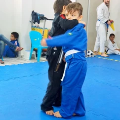
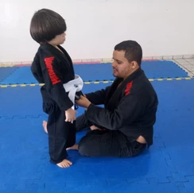
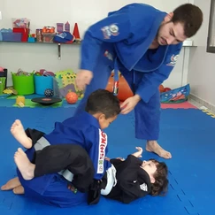
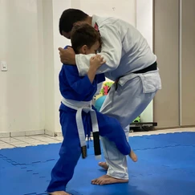
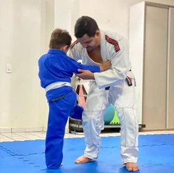
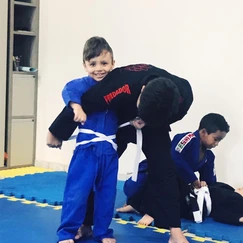
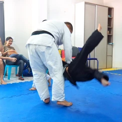
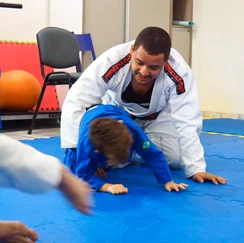
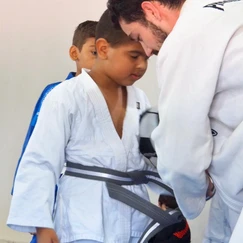

Em abril, nossa atenção está voltada para o Dia de Conscientização sobre o Autismo. A data escolhida, 2 de abril, foi estabelecida pela ONU (Organização das Nações Unidas), tem o “objetivo de levar informação à população para reduzir a discriminação e o preconceito contra os indivíduos que apresentam o Transtorno do Espectro Autista (TEA)”.
Embalados pelo tema, fomos conversar com dois profissionais que estudam sobre o autismo e trabalham com esta comunidade: o Professor Paulo Chereguini, doutor em educação especial, profissional de educação física, analista do comportamento com ênfase no autismo e idealizador do Modelo ExerCiência de intervenção e supervisão; e o Professor Rodrigo Damasceno, psicólogo, responsável e idealizador de um projeto que correlaciona a psicologia do esporte e psicomotricidade com aulas de jiu-jitsu com crianças neuroatípicas (atípicas).
ENTREVISTA PAULO CHEREGUINI
ABRAPESP – O que é o Transtorno do Espectro do Autismo – TEA?
Paulo – O TEA, comumente conhecido simplesmente como autismo, é caracterizado, segundo a 5ª edição do Manual diagnóstico e estatístico de doenças mentais (DSM-V), por uma díade de comprometimentos que envolvem:
a) atrasos no desenvolvimento nas áreas da comunicação e da socialização;
b) bem como a apresentação de padrões restritos e repetitivos de interesse, ritualísticos, as vezes anormais em intensidade e foco, comportamentos vocais e motores estereotipados e ainda hiper ou hipo sensíveis a estímulos sensoriais.
Inicia o Prof. Paulo e disserta …
Paulo – O impacto do TEA pode ser intenso na vida da pessoa e também da sua família. Por se tratar de um transtorno em um “espectro”, o impacto pode variar muito de pessoa para pessoa, tanto em relação às áreas comprometidas quanto à gravidade de comprometimentos. Não se classifica o TEA por base em alguém ser mais ou menos autista, mas sim em termos de necessidade de suporte, variando de 1 até 3. O nível 1 envolve auxílio em situações pontuais e temporárias na vida, seja na escola, na faculdade, no trabalho, em relações sociais ou lidar com emoções que podem ser no esporte. O nível 2 caracteriza-se pelo suporte intermitente em mais de uma área adaptativa da sua vida, às vezes requerendo mais intensidade na mediação para iniciar ou manter interações, nas atividades acadêmicas, atividades da vida diária ou mesmo no engajamento e prontidão para a prática de exercício físico. Já o nível 3 pode envolver dependência de suporte intensivo e contínuo em todas as atividades da vida da pessoa, sendo a prática de exercício físico, nestes casos, requerendo apoio total mas podendo, por outro lado, desencadear efeitos na redução de comportamentos estereotipados, autolesivos ou agressivos. Em termos práticos, o diagnóstico de TEA (realizado a partir de avaliações neuropsicológicas) viabiliza mais facilmente acesso aos direitos garantidos pela Lei Brasileira de Inclusão, de 2015, e aos tratamentos mais efetivos, mas são os desempenhos em avaliações comportamentais de desenvolvimento que vão guiar os profissionais envolvidos na equipe terapêutica sobre os objetivos prioritários, particularizadamente, e os procedimentos de ensino com mais chances de sucesso, explica Dr. Paulo Chereguini.
TEA em números
Pessoas com TEA representam de 1,5 a 2,5% da população mundial. Os dados apresentados pelos órgãos americanos de estatística mais recentes mostram que 1 em cada 44 crianças de 8 anos possui o diagnóstico de TEA. No Brasil não temos dados oficiais, mas o censo de 2020 que será realizado em 2022, pesquisará o autismo, que “vai entrar no radar das estatísticas como forma de mapear quantas pessoas vivem com o transtorno e quantas podem ter, mas ainda não tiveram diagnóstico”, diz matéria de Sayonara Moreno, repórter da Rádio Nacional. Um alerta feito por Chereguini “é que, em função da grande parte das famílias de pessoas com TEA no Brasil não terem acesso ao diagnóstico, seja por fins econômicos (serviço caro) seja por indisponibilidade de profissionais capacitados, ou ainda devido muitas famílias negarem o diagnóstico de seus filhos (por desconhecimento, acredita-se ainda que autismo é castigo de Deus ou culpa da mãe que “não quis” a gravidez – mãe geladeira) os dados nacionais do censo podem ser subestimados, o que vai direcionar equivocadamente políticas públicas aquém do real número de brasileiros com TEA”.
O autismo é mais comum em homens, numa proporção de 4 para 1, “por isso que, historicamente, o símbolo que relacionava ao autismo era uma peça de quebra-cabeça na cor azul, sinalizando a predominância de homens e complexidade do transtorno. Este símbolo tem sido questionado pela própria comunidade do autismo que vem propondo como símbolo um sinal do infinito colorido, sinalizando as múltiplas possibilidades e qualidades da pessoa com TEA, para além da sua identidade de gênero e orientação sexual”. explica Prof Paulo Chereguini
TEA no esporte
ABRAPESP – Até que grau de TEA não compromete a participação no esporte?
Paulo – Além disso, sabemos que as pessoas com TEA estão em geral muito menos engajadas em práticas esportivas e em exercício físico do que seus pares que apresentam desenvolvimento típico. Em parte as barreiras para o acesso e permanência qualificadas das pessoas com TEA, nesses contextos, estão relacionadas às suas dificuldades comunicativas e sociais, interesses restritos, padrões ritualísticos, possível intolerância à frustração e ao erro e às mudanças de rotina. No entanto, as principais barreiras são de natureza atitudinais, que dizem respeito às atitudes preconceituosas e maldosas de outras pessoas diante das pessoas com TEA, e de natureza pedagógicas, ou seja, da falha na formação qualificada de profissionais que viabilizem ambiente harmônico e favorável de ensino e aprendizagem das pessoas com TEA.
Paulo – Nos currículos dos cursos de graduação em Educação Física é possível ter disciplinas que tratem de aspectos legais e conceituais relacionados à educação inclusiva e às vezes sobre adaptações para a prática esportiva de pessoas com deficiência física/motora, visual, auditiva, intelectual e/ou múltipla, mas é raro haver algum conteúdo relacionado ao atendimento educacional ou esportivo de pessoas com autismo ou outros atrasos no desenvolvimento.
Paulo – Nos cursos de graduação em psicologia a realidade de atenção ao tema do TEA não é diferente, sendo na grande maioria das vezes o tema TEA nem sequer mencionado durante toda a formação e, em algumas situações, quando apresentado, é mostrado de forma romantizada “como um anjo azul”. Embora haja já alguns cursos bastante qualificados voltados à formação especializada de profissionais da psicologia, da educação física ou de outras áreas da saúde e educação, visando atendimento com base em evidências cientificamente comprovadas, conhecidas como ciência ABA, a democratização do acesso a estas formações e às supervisões necessárias para atender toda população com TEA, seja no âmbito terapêutico ou seja no âmbito esportivo, está longe de ser a realidade possível.
Paulo – A participação em atividades esportivas independe de diagnóstico de autismo. Há muitos atletas que praticam esportes e que são campeões em várias modalidades esportivas, uns com declarado diagnóstico de TEA, especialmente nível 1 de suporte, e outros que, embora possam ter TEA, não se declaram com TEA (até porque essa informação é de direito e de interesse apenas da própria pessoa) ou que ainda possam ter TEA e nem mesmo buscaram pelo diagnóstico.
Paulo – Atrasos no desenvolvimento motor, embora comum em pessoas com TEA, não é aspecto definidor do TEA. Às vezes, inclusive, por conta de padrões de interesse restrito e possível hiperfoco, alguns se dedicam com tanta intensidade à alguns esportes, à rotina rígida e indisponibilidade para relações sociais, que sob a perspectiva deles os distraem e tiram do foco, que alcançam o alto desempenho esportivo, sendo necessária orientação intensiva para que realizem pausa e descanso necessários, bem como ampliação de interesses sociais para além da prática esportiva.
Paulo – Em termos de práticas esportivas e de lazer que pessoas com TEA mais se engajam, comumente as que apresentam grau de comprometimento social, comunicativo, mas apresentam certa independência na vida diária, estão envolvidas em modalidades individuais, que requerem menor demanda de interação comunitária e que envolvem previsibilidade e movimentos cíclicos e repetitivos, tais como natação, atletismo, caminhada/corrida ou ciclismo. Já os que requerem suporte mais intensivo, comumente estão envolvidos em treino de habilidades básicas de aprendizagem pré-desportiva, gasto energético e correção postural ou da pisada nas pontas dos pés.
Paulo – No esporte vemos atletas autistas tanto nas Olimpíadas, quanto nas Paralimpíadas e também nas Olimpíadas especiais (Special Olympics). O diagnóstico de TEA não é um critério elegível e tampouco inelegível para participação em quaisquer um destes eventos” Conclui Chereguini. O autista não precisa que as pessoas o motivem. Uma boa comparação é o personagem de Tom Hanks, no filme Forrest Gump que corre quilômetros sem incentivo, entrando inclusive numa na Universidade por esta habilidade, mais tarde torna-se campeão de ping pong internacional. A característica dele são as habilidades intelectuais e não interação social. Diferente do personagem do filme Rain Man, interpretado pelo ator americano Dustin Hoffman, que apresenta altas habilidades intelectuais, memoriza números, mas não interage.
Sugestões para ver: as séries “Atypical” e “Auts”, os curtas “Float”, “Loop”e “Coisas fantásticas acontecem”, as animações “Pablo” e “Vila sésamo” e os filmes “Farol das orcas”, além, claro de “Forrest Gump” e “Rain man”.
ENTREVISTA COM RODRIGO DAMASCENO
ABRAPESP – Como a psicologia do esporte pode auxiliar pessoas com TEA?
Rodrigo – A psicologia do esporte tem um direcionamento situacional e trabalha nessa vertente, através de ferramentas estratégicas, para manejar determinadas situações de como lidar com o comportamento de pessoas que possuem o Transtorno do Espectro Autista. Lembrando que o transtorno não está direcionado apenas para o autismo e sim com os transtornos do neurodesenvolvimento, no qual ocorrem dificuldades específicas que podem cometer o indivíduo. Mas essas dificuldades não impedem que isso possa ser aprendido. Não impede que possa ser ensinado através de treinos comportamentais, atrelados ao esporte.
ABRAPESP – Há ferramentas? E quais podem ser utilizadas nessa prática?
Rodrigo – Para se trabalhar com o público TEA, inicialmente é feito uma anamnese. Um processo de avaliação mais completa que visa também os outros acompanhamentos feitos pela equipe multidisciplinar. É um plano de intervenção psicoterapêutica. Trabalhar treino de repertório comportamental através das habilidades sociais, auxiliando o psicólogo e a equipe multidisciplinar a identificar situações específicas, dos avanços pequenos, que de pouco a pouco vamos tendo uma melhora.
ABRAPESP – Qual habilidade mental têm mais necessidade de ser desenvolvida?
Rodrigo – Treino das habilidades sociais. Como lidar em público, com muitas pessoas, em ambientes barulhentos ou algo nesse sentido. Habilidade social através de um processo de psicoeducação, também conscientizando as pessoas ao redor da pessoa com autismo, para que se tornem conscientes da condição, a qual ele será submetido. Não reagindo numa perspectiva de limitação, com receio da dificuldade seja relacionada a incapacidade. Assim, haverá um processo de estímulo corporal e, uma vez que o processo de estímulo tenha ganhos significativos, no processo de interação de desenvolvimento de autoconhecimento, estará cada vez mais alinhado com as práticas mais usuais ou mais adaptativas que a sociedade, como um todo.
ABRAPESP – Conta um pouco sobre seu trabalho com crianças do espectro autista…
Rodrigo – Esse trabalho tem como foco principal trabalhar a modalidade de luta jiu-jitsu com crianças diagnosticadas com Transtorno do Espectro Autista. O objetivo é estimular o processo de socialização, trazer alguns ganhos significativos, no que se refere ao desenvolvimento da autonomia equilíbrio praxias finas e globais. Temos como princípio o uso da psicomotricidade, que é um trabalho voltado com a estimulação psicomotora através da luta de jiu-jitsu, e utilizamos movimentos de estimulação semelhante às técnicas de luta. Isso tem gerado um ganho para as crianças, desde a sua interação social, bem como o processo de autonomia de conhecimento de percepção de si e do seu corpo e consequentemente proporcionando uma melhor estratégia.
Legenda fotos das crianças Todas essas crianças estão dentro do espectro autista








